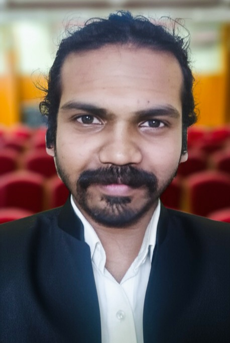

Antony CardozWeb Developer |
 | ||||||||||
Contact Information
|
|||||||||||
Summery
Im a Web Developer, I love my profession. that's why any challenges came to me, I will find a solution for that & I assure your firm will be know the world wide with our website.
|
Work ExperienceOrbtech Arabia : Collaborated with diverse teams to deliver technology-driven solutions. Played a pivotal role in project execution and process enhancement, ensuring optimal performance and client satisfaction. GEO : Engaged in strategic operations and contributed to efficient workflow management. Leveraged expertise to support organizational growth and achieve key objectives. Played a pivotal role in project execution and process enhancement, ensuring optimal performance and client satisfaction.
|
EducationHigher Secondary Education:: Completed Plus Two in Computer Science under the Kerala State Higher Secondary Board, building a strong foundation in computational theory and basic programming concepts. Graduation : Earned a Bachelor of Computer Applications (BCA) from Kerala University, specializing in software development, database management, and information technology systems.
|
Skills
|
Certifications
|
Languages | ||||||